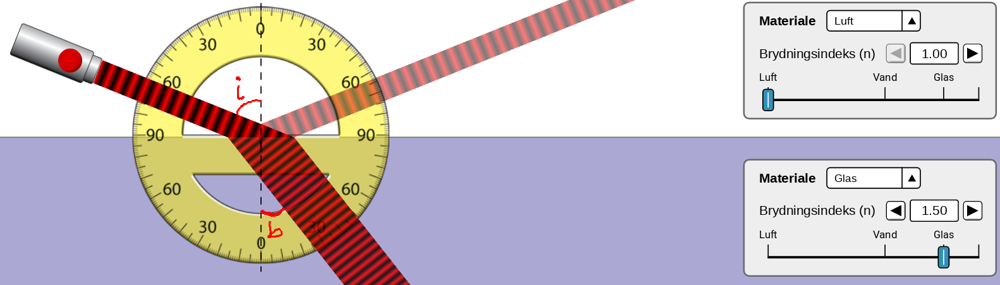
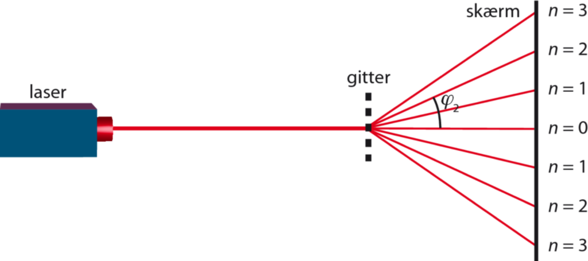

Lys og bølger
Transformation
Jacob Debel
Fysik C & B
Præsentation af formler
Bølger generelt
\begin{align*} f &= \frac{1}{T} \\ v &= \lambda \cdot f = \frac{\lambda}{T} \\ c &= \lambda \cdot f = \frac{\lambda}{T} \quad \text{(I vakuum)} \end{align*}
Brydning
\begin{align*} c &= 3 \cdot 10^8 m/s \\ n_1 &= \frac{c}{v_1} \\ n_{12} &= \frac{n_2}{n_1}\\ \frac{\sin(i)}{\sin(b)} &= n_{12}=\frac{n_2}{n_1} = \frac{v_1}{v_2} \end{align*}

Det optiske gitter
\begin{align*} \sin(\phi_n) &= \frac{n \cdot \lambda}{d} \\ \tan(\phi_n) &= \frac{x}{L} \\ d &= \frac{1}{\text{antal linjer pr. mm}} \end{align*}

Opgaver
Simple træningsopgaver
Find filen
31_transformation_opgaver.pdf
.
Den indeholder 13 opgaver omkring lys og bølger.
Der er en facitliste sidst i dokumentet.